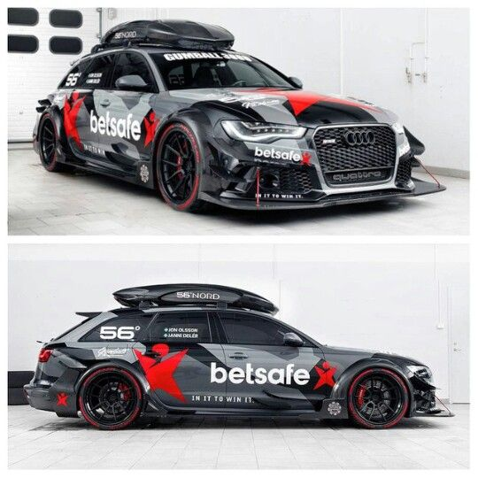

|  |
Az Audi RS6 DTM kinézete durván agresszív: szélesített kaszni, karbon elemek, matt fekete festés kamuflázs mintával. A nagy légbeömlők és a hatalmas szárny egyből versenyautós hangulatot adnak neki. A vaskos kerekek és a dupla kipufogó pedig brutális megjelenést és hangot biztosítanak neki. |